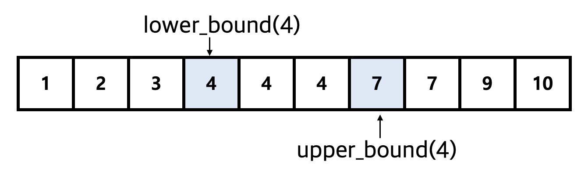
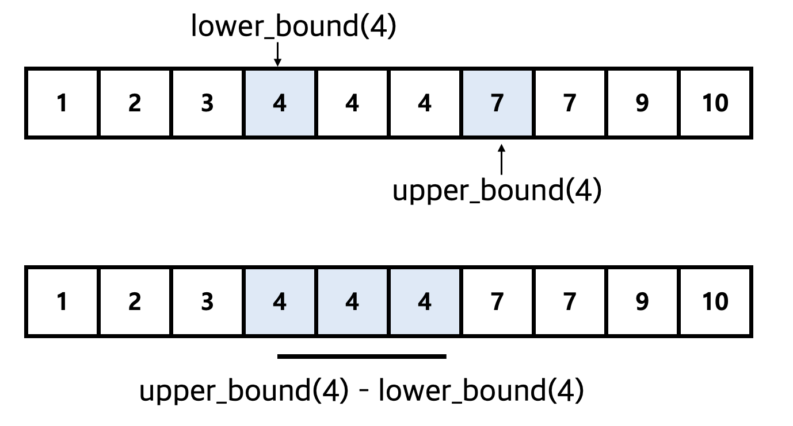

<meta charset="utf-8">
<html lang="ko">
<head>
    <link rel="stylesheet" type="text/css" href="./../style.css" />
    <title>Binary Search in C++ STL</title>
</head>
<body id="tt-body-page" class="">
<div id="wrap" class="wrap-right">
    <div id="container">
        <main class="main ">
            <div class="area-main">
                <div class="area-view">
                    <div class="article-header">
                        <div class="inner-article-header">
                            <div class="box-meta">
                                <h2 class="title-article">Binary Search in C++ STL</h2>
                                <div class="box-info">
                                    <p class="category">Problem Solving/PS With C++</p>
                                    <p class="date">2024-09-29 14:41:18</p>
                                </div>
                            </div>
                        </div>
                    </div>
                    <hr>
                    <div class="article-view">
                        <div class="contents_style">
                            <p style="text-align: center;" data-ke-size="size16"><span style="font-family: 'Nanum Gothic'; color: #000000;">* STL 내부의 이진탐색 관련 메서드 사용법에 관해 정리한 글 입니다.</span><span style="font-family: 'Nanum Gothic';"></span></p>
<p style="text-align: center;" data-ke-size="size16"><a href="https://novlog.tistory.com/entry/%EC%95%8C%EA%B3%A0%EB%A6%AC%EC%A6%98-%EC%9D%B4%EC%A7%84-%ED%83%90%EC%83%89-%EC%95%8C%EA%B3%A0%EB%A6%AC%EC%A6%98-Binary-Search-Algorithm" target="_blank" rel="noopener"><span style="font-family: 'Nanum Gothic';">&rarr;About Binary Search</span></a></p>
<hr contenteditable="false" data-ke-type="horizontalRule" data-ke-style="style6" />
<h2 style="text-align: left;" data-ke-size="size26"><span style="font-family: 'Nanum Gothic'; color: #1a5490;">#1binary_search method</span></h2>
<pre id="code_1727403065930" class="cpp" data-ke-language="cpp" data-ke-type="codeblock"><code>#include &lt;algorithm&gt;
bool binary_search(first, last, value);</code></pre>
<p style="text-align: left;" data-ke-size="size16">&nbsp;</p>
<p style="text-align: left;" data-ke-size="size16"><span style="color: #1a5490;"><b><span style="font-family: 'Nanum Gothic';">parameter Info</span></b></span></p>
<p style="text-align: left;" data-ke-size="size16"><span style="font-family: 'Nanum Gothic'; color: #000000;"><span style="background-color: #333333; color: #dddddd;">first</span> : 탐색 시작 위치 (시작 이터레이터) <b>* 배열의 경우 시작 주소</b></span></p>
<p style="text-align: left;" data-ke-size="size16"><span style="font-family: 'Nanum Gothic'; color: #000000;"><span style="background-color: #333333; color: #dddddd;">&nbsp;last</span> : 탐색 종료 위치 (종료 이터레이터) <b>* 배열의 경우 마지막 주소</b></span></p>
<p style="text-align: left;" data-ke-size="size16"><span style="font-family: 'Nanum Gothic'; color: #000000;"><span style="background-color: #333333; color: #dddddd;">value</span> : 탐색 타깃 데이터</span></p>
<p style="text-align: left;" data-ke-size="size16">&nbsp;</p>
<p style="text-align: left;" data-ke-size="size16"><span style="font-family: 'Nanum Gothic'; color: #000000;">▶ first ~ last 범위 내부에 타깃 데이터 (value) 가 존재하는지 <span style="background-color: #333333; color: #dddddd;">O(LogN)</span> 시간 복잡도로 탐색한다.&nbsp;</span></p>
<p style="text-align: left;" data-ke-size="size16"><span style="font-family: 'Nanum Gothic'; color: #000000;"><span style="font-family: 'Nanum Gothic'; color: #000000; text-align: left;">▶ </span>만약 타깃 데이터가 존재한다면 true를 반환하고, 타깃 데이터가 존재하지 않는다면 false를 반환한다.</span></p>
<p style="text-align: left;" data-ke-size="size16"><span style="font-family: 'Nanum Gothic'; color: #000000;"><span style="font-family: 'Nanum Gothic'; color: #000000; text-align: left;">▶ </span>단, <b>원소가 정렬된 상태에서만 탐색</b>이 가능하며, 정렬되지 않은 상태에서 탐색을 수행하는 경우 타깃 데이터를 탐색하지 못할 수 있다.</span></p>
<p style="text-align: left;" data-ke-size="size18">&nbsp;</p>
<p style="text-align: left;" data-ke-size="size18"><b><span style="font-family: 'Nanum Gothic'; color: #000000;">벡터 내부의 원소가 정렬되지 않은 상태에서 탐색을 수행한 예제</span></b></p>
<pre id="code_1727403523759" class="cpp" data-ke-language="cpp" data-ke-type="codeblock"><code>#include &lt;iostream&gt;
#innclude &lt;algorithm&gt;
#include &lt;vector&gt;
using namespace std;

int main() {

    vector&lt;int&gt; myVec = {1, 2, 9, 4, 5, 6, 7, 8, 9}; // 정렬 x

    // myVec 내부에 target이 존재하는지 binary_search 알고리즘을 사용해 탐색
    if (binary_search(myVec.begin(), myVec.end(), 5)) {
        cout &lt;&lt; "myVec 내부에 target(5)가 존재합니다." &lt;&lt; '\n';
    }
    else {
        cout &lt;&lt; "myVec 내부에 target(5)가 존재하지 않습니다." &lt;&lt; '\n';
    }
}</code></pre>
<pre id="code_1727403580964" class="cpp" data-ke-language="cpp" data-ke-type="codeblock"><code>myVec 내부에 target(5)가 존재하지 않습니다.</code></pre>
<p style="text-align: left;" data-ke-size="size18">&nbsp;</p>
<p style="text-align: left;" data-ke-size="size18"><b><span style="font-family: 'Nanum Gothic'; color: #000000;">벡터 내부의 원소가 정렬된 상태에서 탐색을 수행한 예제</span></b></p>
<pre id="code_1727403834461" class="cpp" data-ke-language="cpp" data-ke-type="codeblock"><code>#include &lt;iostream&gt;
#include &lt;algorithm&gt;
#include &lt;vector&gt;
using namespace std;

int main() {

    vector&lt;int&gt; myVec = {1, 2, 9, 4, 5, 6, 7, 8, 9};
    sort(myVec.begin(), myVec.end()); // sort 함수를 사용해 벡터 내부의 원소를 정렬

    // myVec 내부에 target이 존재하는지 binary_search 알고리즘을 사용해 탐색
    // target이 존재한다면 true를 반환하고 존재하지 않는다면 false를 반환한다.
    if (binary_search(myVec.begin(), myVec.end(), 5)) {
        cout &lt;&lt; "myVec 내부에 target(5)가 존재합니다." &lt;&lt; '\n';
    }
    else {
        cout &lt;&lt; "myVec 내부에 target(5)가 존재하지 않습니다." &lt;&lt; '\n';
    }

}</code></pre>
<pre id="code_1727403858134" class="cpp" data-ke-language="cpp" data-ke-type="codeblock"><code>myVec 내부에 target(5)가 존재합니다.</code></pre>
<hr contenteditable="false" data-ke-type="horizontalRule" data-ke-style="style6" />
<h2 data-ke-size="size26"><span style="font-family: 'Nanum Gothic'; color: #1a5490;">#2 lower_bound &amp; upper_bound method</span></h2>
<pre id="code_1727404069635" class="cpp" data-ke-language="cpp" data-ke-type="codeblock"><code>#include &lt;algorithm&gt;
std::lower_bound(first, last, value);
std::upper_bound(first, last, value);</code></pre>
<p data-ke-size="size16">&nbsp;</p>
<p data-ke-size="size16"><span style="color: #1a5490;"><b><span style="font-family: 'Nanum Gothic';">parameter Info</span></b></span></p>
<p data-ke-size="size16"><span style="font-family: 'Nanum Gothic'; color: #000000;"><span style="background-color: #333333; color: #dddddd;">first</span> : 탐색 시작 위치</span></p>
<p data-ke-size="size16"><span style="font-family: 'Nanum Gothic'; color: #000000;"><span style="background-color: #333333; color: #dddddd;">last</span> : 탐색 종료 위치</span></p>
<p data-ke-size="size16"><span style="font-family: 'Nanum Gothic'; color: #000000;"><span style="background-color: #333333; color: #dddddd;">value</span> : 탐색 타깃 데이터&nbsp;</span></p>
<p data-ke-size="size16">&nbsp;</p>
<p data-ke-size="size16"><span style="font-family: 'Nanum Gothic'; color: #000000;"><b>lower_bound</b> : <span style="background-color: #c0d1e7;">탐색 데이터 (value) 이상의 값 중 가장 작은 값</span>이 나타나는 이터레이터를 반환한다.&nbsp;</span></p>
<p data-ke-size="size16"><span style="font-family: 'Nanum Gothic'; color: #000000;"><b>upper_bound</b> : <span style="background-color: #c0d1e7;">탐색 데이터 (value) 보다 큰 값이 가장 처음으로 등장하는 위치</span>의 이터레이터를 반환한다.</span></p>
<p data-ke-size="size16">&nbsp;</p>
<p data-ke-size="size16"><span style="font-family: 'Nanum Gothic'; color: #000000;"><span style="text-align: left;">▶ </span>내부 동작 구조가 binary_search 알고리즘을 사용해 구현되어 있기에 O(LogN) 만큼의 시간복잡도가 소요된다.</span></p>
<p data-ke-size="size16"><span style="text-align: left; color: #000000;">▶<span>&nbsp; <span style="font-family: 'Nanum Gothic'; color: #000000;">배열이 반드시 정렬된 상태에서 사용해야 정상적으로 동작한다.</span></span></span></p>
<p data-ke-size="size16">&nbsp;</p>
<pre id="code_1727587343067" class="cpp" data-ke-language="cpp" data-ke-type="codeblock"><code>#include &lt;iostream&gt;
#include &lt;vector&gt;
using namespace std;

int main() {

    vector&lt;int&gt; myVec = {1, 2, 3, 4, 4, 4, 7, 7, 9, 10};

    // upper_bound : targetData (4) 보다 큰 값이 가장 처음으로 나타나는 값을 가리키는 이터레이터를 반환한다. (7)
    vector&lt;int&gt;::iterator upper_it = upper_bound(myVec.begin(), myVec.end(), 4);
    // lower_bound : targetData (4) 이상의 값 중 가장 작은 값을 가리키는 이터레이터를 반환한다. (4)
    vector&lt;int&gt;::iterator lower_it = lower_bound(myVec.begin(), myVec.end(), 4);

    cout &lt;&lt; "upper_bound(4) " &lt;&lt; *upper_it &lt;&lt; endl; // 7
    cout &lt;&lt; "lower_bound(4) " &lt;&lt; *lower_it &lt;&lt; endl; // 4

}</code></pre>
<pre id="code_1727587356006" class="cpp" data-ke-language="cpp" data-ke-type="codeblock"><code>upper_bound(4) 7
lower_bound(4) 4</code></pre>
<p data-ke-size="size16">&nbsp;</p>
<p><figure class="imageblock alignCenter" >
    <span data-lightbox="lightbox">
        
    </span>
    <figcaption></figcaption>
</figure></p>
<p data-ke-size="size16">&nbsp;</p>
<h3 data-ke-size="size23"><span style="font-family: 'Nanum Gothic'; color: #1a5490;">#배열 내부에서 특정 원소의 개수를 탐색</span></h3>
<p data-ke-size="size16"><span style="font-family: 'Nanum Gothic'; color: #000000;"><span style="font-family: 'Nanum Gothic'; color: #000000; text-align: left;">▶ </span>lower_bound, upper_bound 메서드를 활용해 선형 자료구조 (배열, 벡터 ..) 내부에서 특정 원소의 개수를 O(LogN)만에 탐색할 수 있다.&nbsp;</span></p>
<p data-ke-size="size16"><span style="font-family: 'Nanum Gothic'; color: #000000;"><span style="font-family: 'Nanum Gothic'; color: #000000; text-align: left;">▶</span><b>upper_bound(4) (4 보다 큰 값이 등장하는 위치) 에서 lower_bound(4) (4가 처음으로 등장하는 위치) 의 값을 빼주면 원소 4의 개수가 출력</b>된다.&nbsp;&nbsp;</span></p>
<p><figure class="imageblock alignCenter" >
    <span data-lightbox="lightbox">
        
    </span>
    <figcaption></figcaption>
</figure></p>
<pre id="code_1727588402208" class="cpp" data-ke-language="cpp" data-ke-type="codeblock"><code>#include &lt;iostream&gt;
#include &lt;vector&gt;
using namespace std;

int main() {

    vector&lt;int&gt; myVec = {1, 2, 3, 4, 4, 4, 7, 7, 9, 10};

    cout &lt;&lt; "원소 4의 개수 : " &lt;&lt; upper_bound(myVec.begin(),myVec.end(), 4) - lower_bound(myVec.begin(), myVec.end(), 4) &lt;&lt; endl;

}</code></pre>
<pre id="code_1727588420032" class="cpp" data-ke-language="cpp" data-ke-type="codeblock"><code>원소 4의 개수 : 3</code></pre>
                        </div>
                        <br/>
                        <div class="tags">
                            
                        </div>
                    </div>
                </div>
            </div>
        </main>
    </div>
</div>
</body>
</html>
